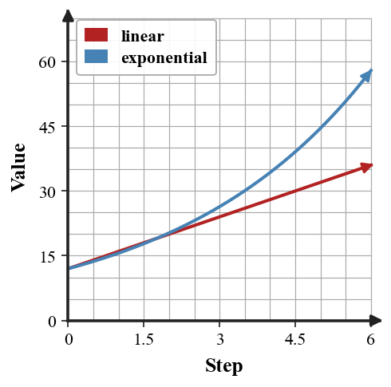

Comparing Function Families
Mathematical idea: Different function families have different patterns of change, even when their graphs all rise or fall.
Today you will compare tables, equations, graphs, and contexts across function families. You will use evidence from rates, differences, ratios, and graph features to justify your choices.
Learning Target
Learning Target: Students will compare linear, quadratic, and exponential functions using multiple representations.
I can statements
- I can formulate comparisons among linear, quadratic, and exponential functions using rates, differences, ratios, and graph features.
- I can use tables, graphs, equations, and situations to distinguish additive, quadratic, and multiplicative patterns.
- I can critique claims about function families using evidence from multiple representations.
What's To Come
This is a long-range preview for future lessons. Do not solve it today. Instead, annotate it individually. Circle anything familiar, underline symbols or directions that seem important, and write notes about what information you think will be needed later.
As you annotate, ask yourself: What parts (words, symbols, graphs) do you KNOW? What parts look FAMILIAR? What parts look like jibberish?
A school club wants to predict membership for the next 6 weeks. The first three counts are 40, 52, and 67.6.
Recommend either a linear or exponential model. Support your recommendation with calculations and explain one limitation.
Intro
Directions
Read the introduction aloud with a partner or in a small group. As you read, annotate the text by highlighting important ideas, circling key vocabulary, and writing short notes about connections, questions, or predictions in the margins.
Function families can often be recognized by how their outputs change. Linear tables have constant first differences, quadratic tables have constant second differences, and exponential tables have constant ratios.
A graph that rises from left to right only tells you the output is increasing. Linear, quadratic, and exponential graphs can all increase, so direction alone is not enough evidence.
Two models can start at the same value and still separate later. If one model adds a fixed amount while the other multiplies by a factor greater than 1, the multiplicative model can eventually grow faster.
In this section, you will compare tables, graphs, equations, and situations. Each representation can provide evidence, but the evidence must match the family you choose.
Model choice matters in context because a prediction can change a lot depending on the function family. A strong comparison includes calculations and a limitation of the model.
Stop and Discuss
- Which table evidence is useful for linear, quadratic, and exponential patterns?
- Why is graph direction not enough to identify a function family?
- Why can an exponential model eventually pass a linear model even if they start together?
Choose evidence based on the type of change you are testing.
| Evidence | Pattern it supports | Example outputs |
|---|---|---|
| Constant first differences | Linear | 5, 8, 11, 14 |
| Constant second differences | Quadratic | 2, 5, 10, 17 |
| Constant ratios | Exponential | 3, 6, 12, 24 |

Context: If a club gains exactly 3 members each week, that is linear; if it grows by multiplying by 1.5, that is exponential.
Example 1: Choose the Right Evidence
For each table, decide whether first differences, second differences, or ratios are the most useful evidence.
| $x$ | 0 | 1 | 2 | 3 | 4 | Evidence |
|---|---|---|---|---|---|---|
| A | 6 | 10 | 14 | 18 | 22 | |
| B | 4 | 12 | 36 | 108 | 324 | |
| C | 2 | 5 | 10 | 17 | 26 |
- Complete the evidence column.
- Name the likely function family for each row.
- Explain why one type of evidence is not enough for all tables.
You Try It 1: Choose Evidence Again
For each table, decide whether first differences, second differences, or ratios are the most useful evidence.
| $x$ | 0 | 1 | 2 | 3 | 4 | Evidence |
|---|---|---|---|---|---|---|
| A | 10 | 13 | 16 | 19 | 22 | |
| B | 5 | 10 | 20 | 40 | 80 | |
| C | 0 | 1 | 4 | 9 | 16 |
- Complete the evidence column.
- Name the likely function family for each row.
- Explain why the evidence supports your choice.
Stop and Discuss
- Which evidence type matched the family in both problems?
- How would the conclusion change if you only looked at graph direction?
Example 2: Classify Tables with Calculations
Use first differences, second differences, and ratios to decide which family best fits each table.
| $x$ | 0 | 1 | 2 | 3 | 4 |
|---|---|---|---|---|---|
| A | 4 | 8 | 16 | 32 | 64 |
| B | 1 | 4 | 9 | 16 | 25 |
| C | 9 | 14 | 19 | 24 | 29 |
- Classify Table A, Table B, and Table C.
- Show the calculations that support each classification.
- Choose one table and explain why a different family is not supported.
You Try It 2: Classify New Tables
Use differences and ratios to decide which family best fits each table.
| $x$ | 0 | 1 | 2 | 3 | 4 |
|---|---|---|---|---|---|
| A | 2 | 6 | 18 | 54 | 162 |
| B | 4 | 7 | 12 | 19 | 28 |
| C | 11 | 15 | 19 | 23 | 27 |
- Classify Table A, Table B, and Table C.
- Show the calculations that support each classification.
- Choose one table and rule out a different family.
Stop and Discuss
- Which evidence type matched the family in both problems?
- How would the conclusion change if you only looked at graph direction?
When two models start together, a table can show when their growth patterns separate.
| $x$ | 0 | 1 | 2 | 3 | 4 |
|---|---|---|---|---|---|
| $L(x)=12+4x$ | 12 | 16 | 20 | 24 | 28 |
| $E(x)=12(1.3)^x$ | 12 | 15.6 | 20.28 | 26.36 | 34.27 |
The linear model adds 4 each step, while the exponential model multiplies by 1.3 each step.

Context: The better model depends on the observed data and whether fixed-addition or percent-growth assumptions make sense.
Example 3: Compare Linear and Exponential Models
Compare $L(x)=15+5x$ and $E(x)=15(1.25)^x$ for $x=0$ through 5.
- Create a table of values for both models.
- Which model grows faster at first?
- Which model is growing faster by $x=5$? Explain.
You Try It 3: Compare Two New Models
Compare $L(x)=20+6x$ and $E(x)=20(1.2)^x$ for $x=0$ through 5.
- Create a table of values for both models.
- Which model grows faster at first?
- Which model is growing faster by $x=5$? Explain.
Stop and Discuss
- Which evidence type matched the family in both problems?
- How would the conclusion change if you only looked at graph direction?
Example 4: Critique Direction-Only Reasoning
A data table has outputs 3, 9, 27, 81, 243. A student makes a quick claim.
Student claim: "It is linear because the graph would go up from left to right."
- Analyze the structure of the table.
- Explain why direction alone is not enough evidence.
- Write a corrected claim using ratios.
You Try It 4: Revise a Claim
A data table has outputs 64, 32, 16, 8, 4. A student says it is linear because it goes down at a steady-looking pace.
- Analyze the structure of the table.
- Explain why direction alone is not enough evidence.
- Write a corrected claim using ratios.
Stop and Discuss
- Which evidence type matched the family in both problems?
- How would the conclusion change if you only looked at graph direction?
Summary
You can compare function families by matching the evidence to the type of change.
Linear patterns have constant first differences, quadratic patterns have constant second differences, and exponential patterns have constant ratios.
A common error is to use the direction or general shape of a graph without checking numerical evidence.
Strong understanding means you can justify a model choice across tables, graphs, equations, and contexts and explain a limitation of the choice.
Common Mistakes
- Using shape names only. Why it is tempting: graphs are quick to label. What to check instead: support claims with differences, ratios, or features.
- Mixing up second differences and ratios. Why it is tempting: both involve more than one step. What to check instead: write the actual calculations.
- Assuming exponential is always bigger. Why it is tempting: early values can be close. What to check instead: compare over the requested interval.
- Ignoring context. Why it is tempting: a pattern may fit numbers but not the situation. What to check instead: state what kind of change the context implies.
- Matching by order. Why it is tempting: lists may be arranged conveniently. What to check instead: scramble choices and use evidence.
Optional Future Task Reflection
Look back at the future task. Do not solve it yet. Highlight one part that makes more sense now than it did at the beginning. Circle one part that still feels unfamiliar. Write one sentence about what representation you would look at first.
For each table, decide whether first differences, second differences, or ratios are the most useful evidence.
| $x$ | 0 | 1 | 2 | 3 | 4 |
|---|---|---|---|---|---|
| A | 5 | 9 | 13 | 17 | 21 |
| B | 2 | 6 | 18 | 54 | 162 |
| C | 1 | 4 | 9 | 16 | 25 |
Use first differences, second differences, and ratios to decide which family best fits each table.
| $x$ | 0 | 1 | 2 | 3 | 4 |
|---|---|---|---|---|---|
| A | 3 | 9 | 27 | 81 | 243 |
| B | 2 | 5 | 10 | 17 | 26 |
| C | 7 | 12 | 17 | 22 | 27 |
What is one idea about comparing linear, quadratic, and exponential functions you understand better now than at the start of class? Write at least one complete sentence.
What is one thing about comparing linear, quadratic, and exponential functions you still want to understand or practice? Be specific — name the idea, not just "everything."